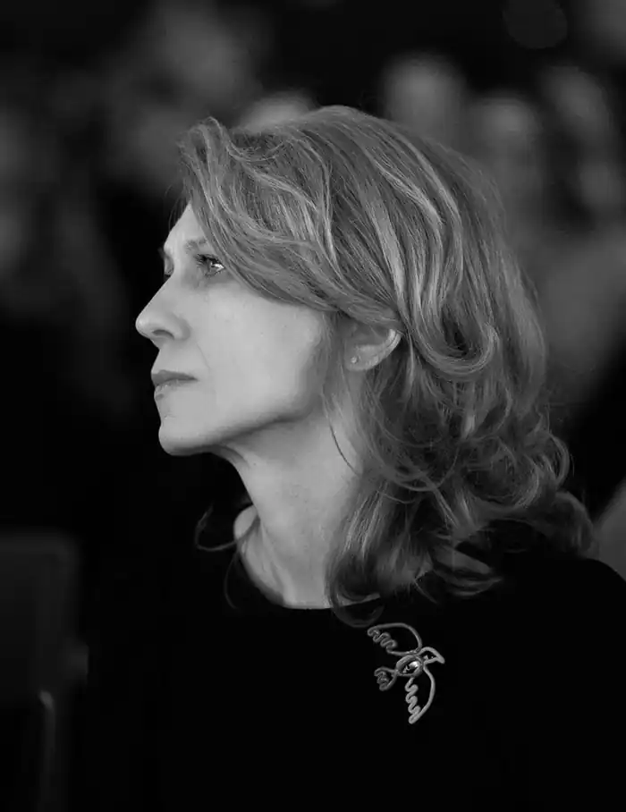

Письменниця (авторка 8 книг для дітей). Журналістка, яка має понад 30-річний досвід, зокрема, 7 років співпраці з Українською Службою BBC, донині активно співпрацює з zn.ua; KyivPost; Радіо Свобода, ELLE Україна та ін.медіа. Спеціалізується на соціально-культурній тематиці.
Редакторка. Працювала на посадах головної редакторки у міжнародних видавничих будинках Edipresse Ukraine, Sanoma Media Ukraine.
Членкиня журі ювілейного літературного конкурсу "Коронація слова" (2021). Бібліографія